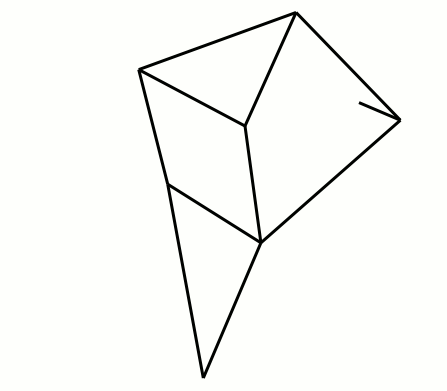
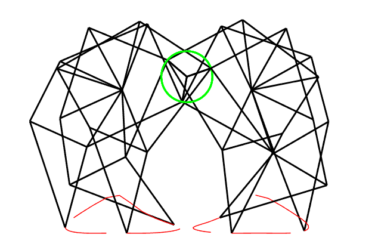

jansen linkages revision 6059
^ Techniques infobox ^^
| image | Strandbeest-Walking-Animation.gif |
| designer | |
| date | |
| vitamins | |
| materials | |
| transformations | |
| lifecycles | |
| parts | [[frames|Frames]], [[bolts|Bolts]], [[nuts|Nuts]], [[end_caps|End caps]] |
| techniques | [[bolting|Bolting]], [[live_hinges|Live hinges]] |
| tools | [[wrenches|Wrenches]] |
| git | |
| stl | |
Introduction
'''Jansen's linkage''' is a planar leg mechanism designed by the kinetic sculptor Theo Jansen to generate a smooth walking motion. Jansen has used his mechanism in a variety of kinetic sculptures which are known as Strandbeesten (Dutch for "beach beasts"). Jansen's linkage bears artistic as well as mechanical merit for its simulation of organic walking motion using a simple rotary input.
Challenges
Approaches

